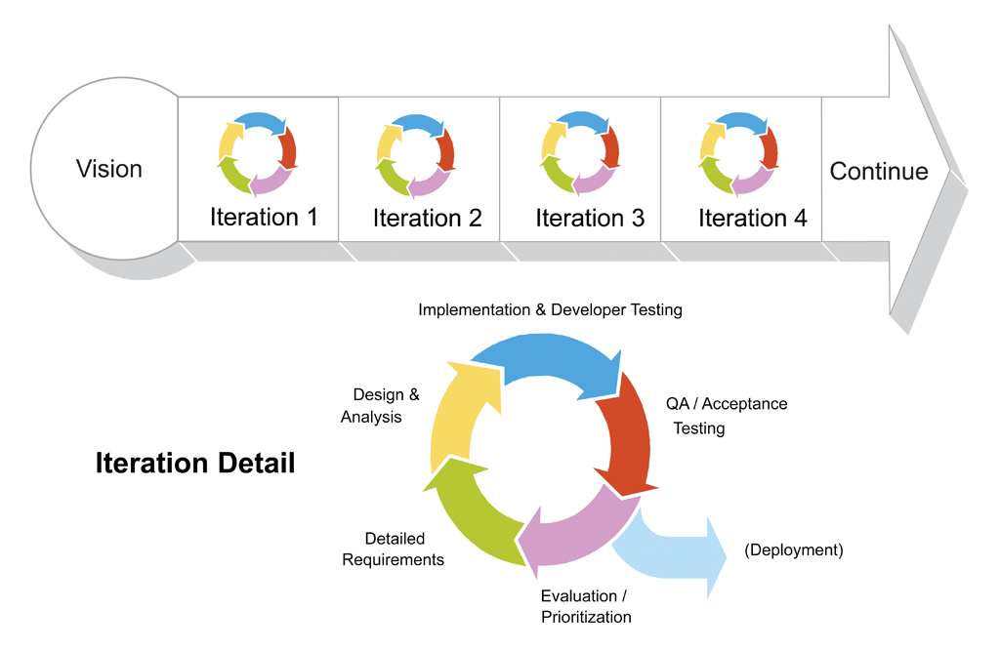

A Hitchhiker's Guide to the
Functional Exception Handling in Java
Grzegorz Piwowarek
@pivovarit
{ 4comprehension.com }
System Engineer @ Casumo
Trainer @ Bottega IT Minds
OS Contributor
DZone MVB
Agenda
Exceptions
Type-Driven Development
Optional, Try, Either
"Every time you call a function that can raise an exception and don’t catch it on the spot, you create opportunities for surprise bugs caused by functions that terminated abruptly,leaving data in an inconsistent state, or other code paths that you didn’t think about."October 13, 2003 by Joel Spolsky
Exceptions:
Create unexpected exit points
Behave like GOTOs
Invisible in the source code
Invisible when async
... and don't come for free
public synchronized Throwable fillInStackTrace() { ... }
"Fills in the execution stack trace. This method records within this Throwable object information about the current state of the stack frames for the current thread."
"Cost of Causing Exceptions", Heinz Kabutz

Error Handling in Go!
"Values can be programmed, and since errors are values, errors can be programmed. Errors are not like exceptions. There’s nothing special about them, whereas an unhandled exception can crash your program.""Errors are values", Rob Pike
Errors are values
func foo(s string) (string, error) { ... }
response, err := foo("42")
if err != nil {
// ...
}

_, err := os.Create("/tmp/file")
if err != nil {
panic(err)
}
Meanwhile in Java...
Exception Handling Antipatterns
Log and throw
Declaring that your method throws java.lang.Exception
Declaring that your method throws a large variety of exceptions
Log and return null
Catch and ignore
Catching java.lang.Exception
Destructive wrapping
Throw within finally
Multi-line log messages
Unsupported operation returning null
Relying on getCause()
...
Compile-time checks -> shorter feedback cycles
Stringly-typed
public class Person {
private final String name;
private final String surname;
private final String address;
private final String phoneNumber;
private final String age;
}
Strongly-typed
public class Person {
private final String name;
private final Surname surname;
private final Address address;
private final PhoneNumber phoneNumber;
private final PositiveInteger age;
}
Optionality expressed with types
Person findOne(long id);
Optional<Person> findOne(long id);
Same approach can be applied to exception handling
vavr-io
cyclops-react
arrow (Kotlin)
Try (Scala)
encapsulates exception handling
sealed abstract class Try[+T]
Consumer side
List<URL> getSearchResults(String searchString) throws IOException
Try<List<URL>> getSearchResults(String searchString) { ... }
getSearchResults("foo")
.map(...)
.filter(...)
.onFailure(ex -> LOG.info("..."))
.recoverWith(...)
.getOrElse(() -> 42);
API
Try<U> map(Function<? super T, ? extends U> mapper)
Try<U> flatMap(Function<? super T, ? extends Try<? extends U>> mapper)
Try<T> filter(Predicate<? super T> predicate) ...
Try<T> orElse(Try<? extends T> other)
Try<T> onFailure(Consumer<? super Throwable> action)
Try<T> onSuccess(Consumer<? super T> action)
Try<T> recover(Class<X> exception, T value)
T get(); // do not use that.
Producer side
List<URL> getFromGoogle(String search)
throws NoSuchElementException, IOException
List<URL> getFromDuckDuckGo(String search)
throws IOException
static Try<List<URL>> getSearchResults(String searchString) {
return Try.of(() -> getFromGoogle(searchString))
.recover(NoSuchElementException.class, emptyList())
.recover(NSAForbiddenException.class, emptyList())
.orElse(() -> Try.of(() -> getFromDuckDuckGo(searchString)));
}
Try<InputStream> javaday = getSingleSearchResults("javaday")
.flatMap(url -> Try.of(url::openStream))
Match(javaday).of(
Case($Success($()), "Opened successfully"),
Case($Failure($()), "Failed :(")
);
Option (Scala)
sealed abstract class Option[+A]
Absence modeling
Person findOne(long id) throws NoSuchElementException;
Integer valueOf(String s) throws NumberFormatException;
->
Try<Person> findOne(long id)
Try<Integer> valueOf(String s)
->
Optional<Person> findOne(long id);
Optional<Integer> valueOf(String s);
Emulating Go's error handling with Tuples
Tuple2<Person, ErrorObject> findOne(long id);
Tuple2<Person, ErrorObject> res = findOne(42);
if (res._2 != null) { ... }
if (res._1 != null) { ... }
Omnipresent "Java" feel
Tuples are expected to hold non-nullable values
Either (Scala)
encapsulates exception handling
sealed abstract class Either[+A, +B]
Disjoint union
Try<T> is isomorphic to Either<Throwable, T>
By convention, Right is success and Left is failure
In Scala (and Vavr), Either is right-biased now*
Instantiation
Either.left("42");
Either.right(42);
API
LeftProjection<L, R> left()
RightProjection<L, R> right()
Either<X, Y> bimap(
Function<..., X> leftMapper,
Function<..., Y> rightMapper)
U fold(Function<..., U> leftMapper, Function<..., U> rightMapper)
R getOrElseGet(Function<? super L, ? extends R> other)
Either<R, L> swap()
L getLeft() // do not use that unless you know what you are doing
L getRight() // yup, you guessed it.
Error objects (Scala)
case class FetchError(msg: String, response: HttpResponse)
Error objects (Java)
public static class FetchError {
private final String msg;
private final HttpResponse response;
public FetchError(String msg, HttpResponse response) {
this.msg = msg;
this.response = response;
}
public String getMsg() {
return msg;
}
public HttpResponse getResponse() {
return response;
}
@Override
public String toString() {
return "FetchError{" +
"msg='" + msg + '\'' +
", response=" + response +
'}';
}
@Override
public boolean equals(Object o) {
if (this == o) return true;
if (o == null || getClass() != o.getClass()) return false;
FetchError that = (FetchError) o;
if (msg != null ? !msg.equals(that.msg) : that.msg != null) return false;
return response != null ? response.equals(that.response) : that.response == null;
}
@Override
public int hashCode() {
int result = msg != null ? msg.hashCode() : 0;
result = 31 * result + (response != null ? response.hashCode() : 0);
return result;
}
}
That's 44 Scala's case classes...
case class FetchError(msg: String, response: HttpResponse)
case class FetchError(msg: String, response: HttpResponse)
case class FetchError(msg: String, response: HttpResponse)
case class FetchError(msg: String, response: HttpResponse)
case class FetchError(msg: String, response: HttpResponse)
case class FetchError(msg: String, response: HttpResponse)
case class FetchError(msg: String, response: HttpResponse)
case class FetchError(msg: String, response: HttpResponse)
case class FetchError(msg: String, response: HttpResponse)
case class FetchError(msg: String, response: HttpResponse)
case class FetchError(msg: String, response: HttpResponse)
case class FetchError(msg: String, response: HttpResponse)
case class FetchError(msg: String, response: HttpResponse)
case class FetchError(msg: String, response: HttpResponse)
case class FetchError(msg: String, response: HttpResponse)
case class FetchError(msg: String, response: HttpResponse)
case class FetchError(msg: String, response: HttpResponse)
case class FetchError(msg: String, response: HttpResponse)
case class FetchError(msg: String, response: HttpResponse)
case class FetchError(msg: String, response: HttpResponse)
case class FetchError(msg: String, response: HttpResponse)
case class FetchError(msg: String, response: HttpResponse)
case class FetchError(msg: String, response: HttpResponse)
case class FetchError(msg: String, response: HttpResponse)
case class FetchError(msg: String, response: HttpResponse)
case class FetchError(msg: String, response: HttpResponse)
case class FetchError(msg: String, response: HttpResponse)
case class FetchError(msg: String, response: HttpResponse)
case class FetchError(msg: String, response: HttpResponse)
case class FetchError(msg: String, response: HttpResponse)
case class FetchError(msg: String, response: HttpResponse)
case class FetchError(msg: String, response: HttpResponse)
case class FetchError(msg: String, response: HttpResponse)
case class FetchError(msg: String, response: HttpResponse)
case class FetchError(msg: String, response: HttpResponse)
case class FetchError(msg: String, response: HttpResponse)
case class FetchError(msg: String, response: HttpResponse)
case class FetchError(msg: String, response: HttpResponse)
case class FetchError(msg: String, response: HttpResponse)
case class FetchError(msg: String, response: HttpResponse)
case class FetchError(msg: String, response: HttpResponse)
case class FetchError(msg: String, response: HttpResponse)
case class FetchError(msg: String, response: HttpResponse)
Either in action
Try<List<URL>> getSearchResults(String searchString)
Either<FetchError, List<URL>> getSearchResults(String searchString)
Either<FetchError, List<URL>> result = getSearchResults("foo")
result.right()
.filter(...)
.map(...)
.getOrElse(Collections::emptyList);
result.left()
.map(FetchError::getMsg)
.forEach(System.out::println);
Alternative Paths
static Either<DnsUrl, URL> resolve(String url)
Alternative Paths - Scala TailCalls
/** Returns either the next step of the tailcalling computation,
* or the result if there are no more steps. */
@annotation.tailrec final def resume: Either[
() => TailRec[A], A] = this match {
case Done(a) => Right(a)
case Call(k) => Left(k)
case Cont(a, f) => a match {
case Done(v) => f(v).resume
case Call(k) => Left(() => k().flatMap(f))
case Cont(b, g) => b.flatMap(x => g(x) flatMap f).resume
}
}
What if your language(Java.) does not support that?
Use vavr.io (formerly known as Javaslang)
Take part in Java Community Process
Key takeaways
- Exceptions work best when you don't expect people to recover from them
- Try can be used for representing computations that may throw an exception
- Absence can be modelled with Option instead of NoSuchElementException
- Either can be used for advanced scenarios involving custom error objects and modeling alternative paths
- VAVR is the new Guava